Same spec, deliberately different subjects, run twice. A style is approved on this sheet, not on the written spec. The spec lives in .agents/design.md → Art Direction; what this test changed in it is listed under each class.
Photography
Generated in Flora with GPT Image 2.5, anchored to three public-domain/CC0 mission-control photographs. Raw output shown; approved images then go through treat.sh.
Run A — first prompts
EditOps room at night. Composition and light right — but the stacked tick charts read trading floor, not marketing.
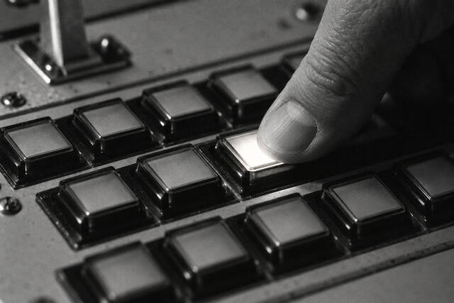
ApproveKeycap press. Hard side light, one key lit. Anchor.Re-promptMonitor wall came back as a 1960s Apollo recreation — the anchors pulled the era, not just the light.
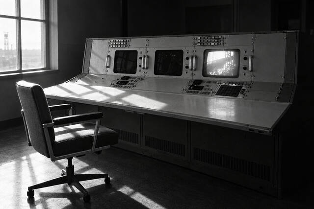
Re-promptSame failure: a period console. A fake "archival" photo is close to fabricating the real.
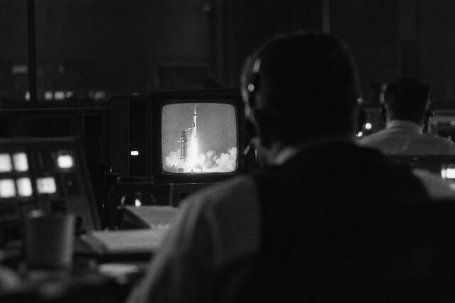
Re-promptHeadsets, CRT, rocket — costume, not abstraction.
What run A changed in the spec: generated photography is always present-day; anchors lend only light, contrast and grain ("not their equipment or era"). When we want the archive, we use the real NASA archive — it's public domain.
Run B — tightened prompts, edits, and a repeat
ApproveEdit of A1: "keep everything; only change the screens." Held composition, people, dark left third. → filmstrip.ApproveKeycap, run again from the same prompt — a sibling of A2. The spec repeats.
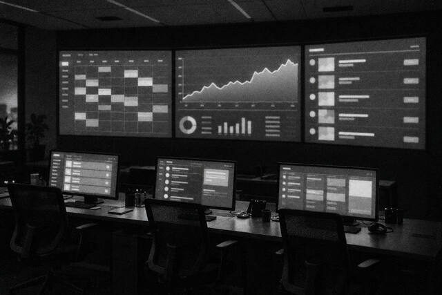
EditPresent-day now — but ceiling lights make it evenly lit, and potted plants are stock.
ApproveEdit of B3: lights off, plants gone; everything else held.
ApproveLate dashboard. (B5 was blocked by the provider's content filter; re-prompted without the over-the-shoulder framing.)
Set test — the approved set after the treatment (grayscale → amber tone map → scanlines → grain), archive and generated side by side
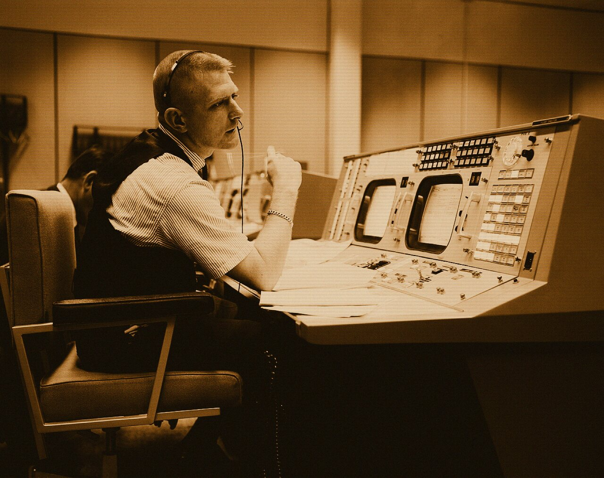
NASA archive (PD), treatedGenerated, treated
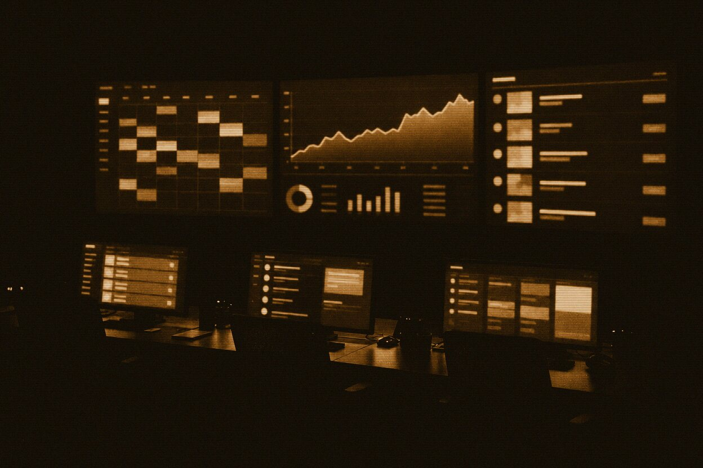
Generated, treated
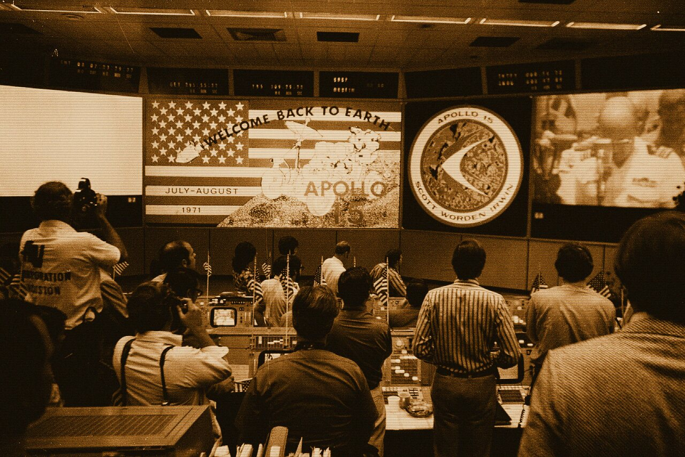
NASA archive (PD), treated
Verdict: one world across 1969 and 2026 — the grade is doing its job. Watch: the archive frames are flash-lit and run brighter than the generated ones; use them where brightness is welcome (thumbnails, dividers) and the generated set where type needs dark negative space. In place below: the filmstrip as the homepage uses it, with real type on the dark left third.
It runs our whole marketing operation between reviews. We just read the telemetry.
Dana Reyes · Head of Growth
Illustration — "flight plans"
Run A drawn in SVG by the agent from the spec. Run B: three of the same subjects generated with Arrow 2.0 in Flora from a prompt written only from the spec — does a different hand converge?
Run A — eight subjects incl. the hard cases (a person, a crowd, spot size)
Findings:Edit the operator was first drawn as a ring around a point — too close to the logo's ring; now a square marker. Fail tile 7 at 96px collapses into a squiggle → spot rule added: below 160px, 2px stroke, no labels, max three nodes (tile 7b passes). The person tile passes: "the operator is a marked point" says you without drawing a figure.
Run B — Arrow 2.0 (Quiver, via Flora), same subjects · left: Arrow · right: run A
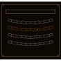
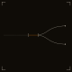
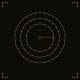
Verdict: siblings — the spec holds across tools. Same flight-plan language, one amber active element, brackets. Drift: Arrow's line is a hairline (~0.9px at this size vs the spec's 1.5px) → the spec now sets weight relative to output size (1.5px at 400px wide; scale with it). Arrow added console segment dividers — acceptable detail. No labels on Arrow's tiles is correct: labels are always live text set in layout, never generated.
Iconography
The brand's own ten concepts in three candidate libraries, at real sizes, next to body text in IBM Plex Sans.
Verdict: Material Symbols Sharp. Its right angles match Chakra Petch's cut corners — the icon is drawn with the same pen as the type. Rounded reads friendly-consumer (it was concept 03's set, filled). Lucide's 2px stroke is lighter than Plex's stems inline. Sharp holds at 20px; at 40px it's a feature-card icon, not a spot illustration — those come from the illustration style.
Pattern & texture
Each texture at three scales, behind a real headline and body copy. It has to stay a backdrop.
Grid · 24px
Too busy behind body copy — reads as graph paper. Not used.
Grid · 48px
The built value. Present without competing; masked to fade at the edges.
Grid · 96px
Disappears behind a headline — fine for full-bleed heroes only.
Rings · small
Reads as a target — too literal at this scale.
Rings · oversized
The print/social deployment: oversized, cropped by the frame.
Scanlines on type
Fails — it muddies the copy. Scanlines live inside photography only.
Verdict: 48px grid on the web; oversized cropped rings in print and social; scanlines only inside the photo treatment. Nothing new added to the never list — the existing "never behind body text" rule is confirmed.